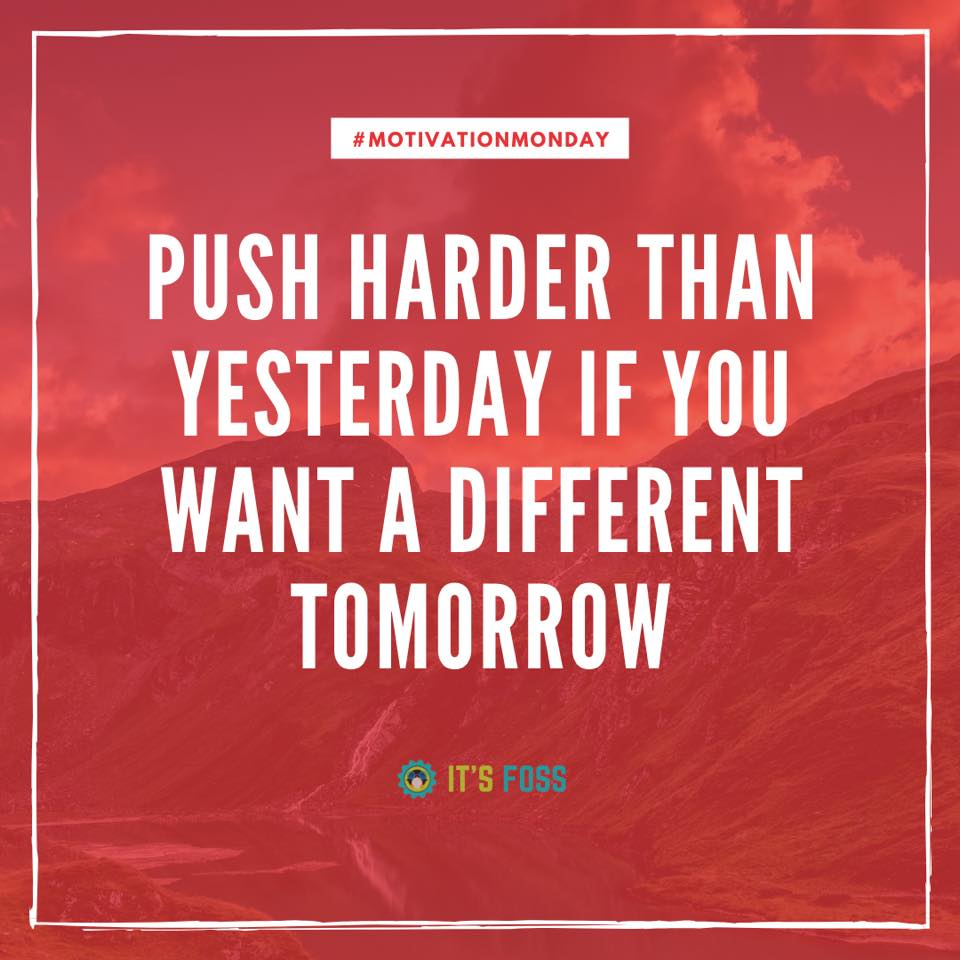

Hello, My name is Jacob Limas on this page you will see a background on my education, a image of a quote that I
find inspirational and my contact inforamtion
Educational history
Homeschool
Mary Eyre Elementary School
Houck Middle School
North Salem High School
Chemeketa Community College
Starting from the beginning of my education, I started my education by being homeschooled. I ended up going to Mary Erye
elementary my last year of elementary. I went to Houck middle school for the whole three years. Afterward, I went to North
Salem high school for the end of my preliminary schooling. I entered Chemeketa Community College after high school. I stayed
at Chemeketa for about four years. Two years ago, I found what major I wanted to pursue after I took computer science.
An inspiational quote to me

This is a quote that I find inspirational. I enjoy the idea of becoming better than you once were and trying to get rid of
your weakness. For example, as I grew older in school, I started to become a huge procrastinator. It worked out in high school,
but slowly as I go throughout college, I am learning that I can't keep going through school in the same way that I am used to.
Lately, I have been trying to get better at starting an assignment even if I don't understand it, but I still tend to fall back
to my habits. So my idea of pushing harder than yesterday is getting rid of my weaknesses and my bad habits.
Contact inforamtion
My contact info is: Jlimas5@my.chemeketa.edu I can be reached from 5pm to 10pm from Mondays to Fridays